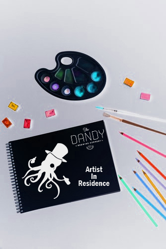
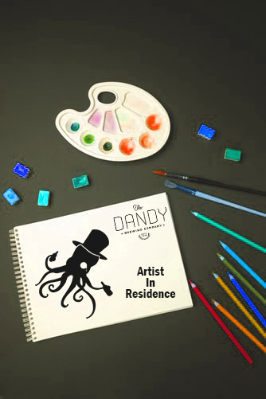
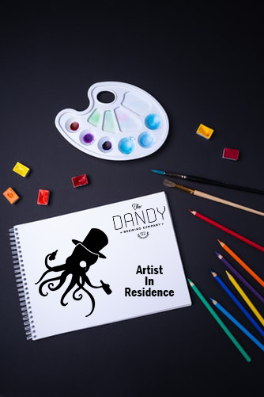

The Dandy Brewing Company's 'Artist in Residency' is a program aimed at visual artists in Alberta.
Dandy has long valued the visual arts and this program is designed to support those who make the Alberta scene so exciting.
The program provides a small stipend every month, for 6 months. Throughout the 6 months Artists are also encouraged to collaborate with the Dandies on events and projects!
Please note, the program is currently being restructured,
and will be back in action, summer 2020.

APPLICATIONS ARE CLOSED.
Past Artists:
Jacqueline Huskisson (Winter/Spring 2018)
Chris Pecora (May-October 2017)
Kelsey Fraser (November 2016-April 2017)